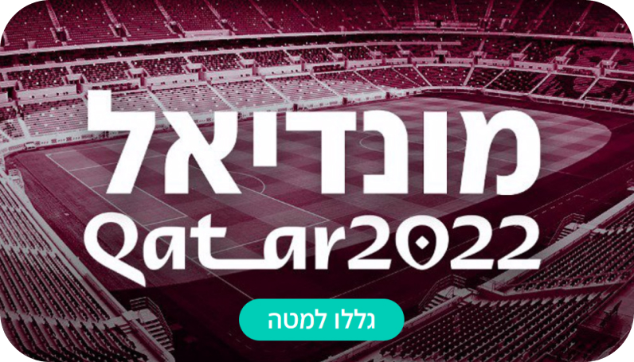

All Graphic Design Projects

World Cup 22 Infographic
Infographic for the 2022 World Cup, featuring key stats and highlights.

Road Accidents Data Visualization
Data visualization on road accident statistics, highlighting safety information.

Climate Change Awareness Graphics
Graphics to raise awareness about climate change, translating complex data.

Britney 40 - Pop Culture Infographic
Infographic celebrating Britney Spears' 40th birthday, showcasing milestones.

Israeli Politics - Data Visualization
Data visualization on Israeli politics, illustrating key aspects and trends.

Homat Magen - Operation Overview
Graphic overview of Operation 'Homat Magen', explaining key events.